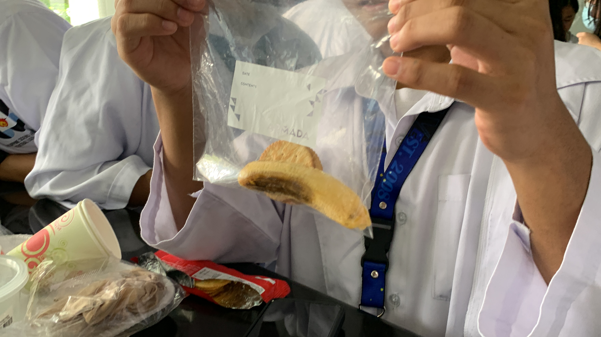
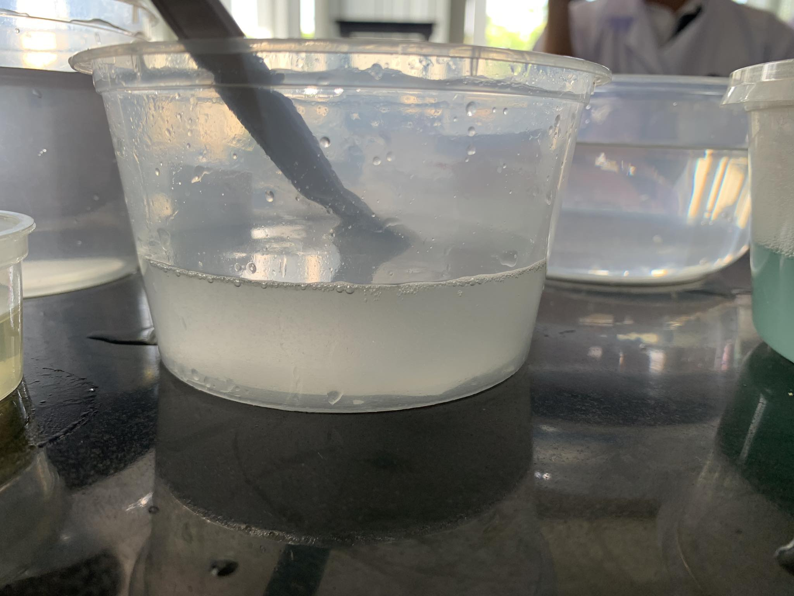
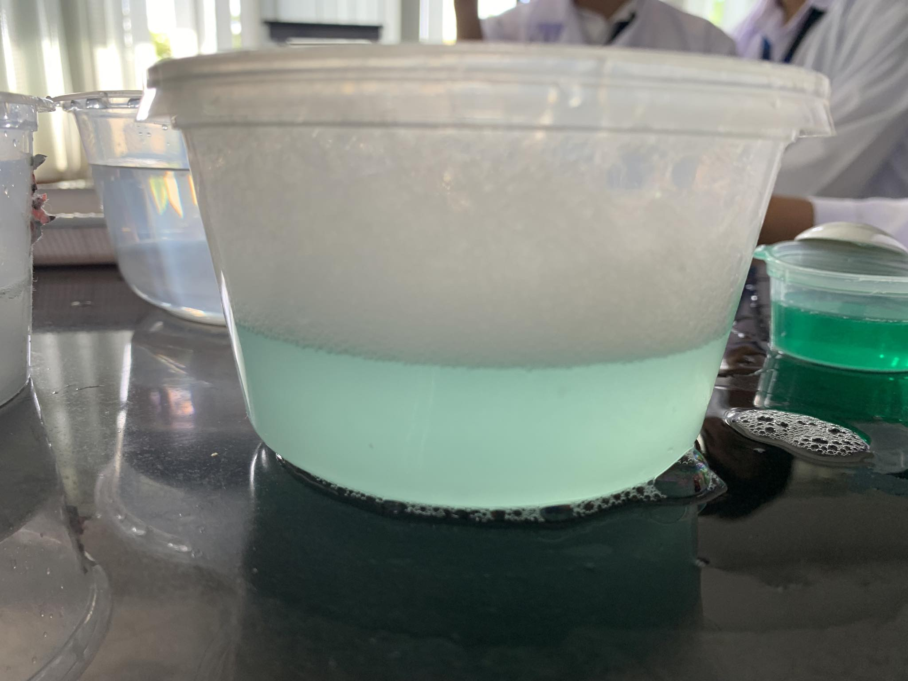

Welcome to Nexus Academy's Laboratory Page where you can visit and see unique and interesting information that was collected by our scholars to showcase the complexity, importance, and distinctiveness of the digestive system!
The digestive system is an integral organ system because of its significance in keeping the body healthy in its own way. Without the digestive system, our body would basically have no nutrients to create energy. No energy means the important organs in our body like the brain, heart, and lungs, that would need energy to function, would fail, which would eventually lead to death.
Below is a simulation activity about the digestive system that was done by our students in the laboratory. The simulation showcases the digestive system but in a simpler form that is easier to comprehend because of the use of plain materials in place of the organs of the digestive system.
DIGESTIVE SIMULATION
1. INGESTION AND DIGESTION

In this process, we placed some crackers and a banana in a ziplock bag. After that, we manually crushed the contents inside, then we added water and orange juice.
Discussion:
During this stage we observed that the ziplock bag acted as the mouth, and putting the food inside the ziplock simulated the ingestion of food. The crushing of the food represented mechanical digestion (chewing). Adding the water simulated the salivary amylase being mixed with the food. This turns the food into much smaller pieces so it becomes easier to break down when it reaches the stomach. After mechanical digestion, we added orange juice which simulated the gastric juices being released and turning the food into chyme. During this process, the ziplock bag acted as the stomach. Some of the possible biomolecules present in the banana and crackers include carbohydrates (crackers) proteins (in banana), nucleic acid (banana), and lipids (banana).
2. TRANSPORT
In this part of the experiment, we transfered the contents of the ziplock bag into a stocking.
Discussion:
The water flowing from the stocking represents the water being absorbed by the intestines and going to the bloodstream and the excess water becomes urine and goes to the bladder, which is signified by the tray.
After all the water flowed out, what is left inside the stocking is dehydrated and solid bolus, which represents the feces. Then, we cut the bottom of the stockings and place it inside a cup with a hole on the bottom, then we pushed the food out which simulated excretion of undigested food or feces.
3. ABSORPTION
In this experiment, we have tissues with the same sizes but different number of folds. In the video, we observed the effects of the tissues on the water inside the graduated cylinder.
Discussion:
We observed that the paper towel with the most folds (four folds) absorbed the most water, because folding a paper towel creates more layers which creates more space for water to be absorbed. This part can be compared to the small intestines because the small intestines absorb most of the water that goes into the bloodstream.
The small intestines have folds, villi, and microvilli, which increase surface area and help in absorption because there is more contact with the enterocytes, the folds in the tissue act as the folds in the intestine with villi and microvilli.
4. LIPID DIGESTION


During this process, we have two jars with water and oil, but we mixed dishwashing liquid in the second jar. The dishwashing liquid acts as the bile, which is released by the liver and stored in the gallbladder and is mainly responsible for breaking down lipids, in this case is the oil.
Discussion:
In the first solution, oil and water, the oil floated to the top of the water due to the difference in their density. When the solution was mixed, the oil did not mix with the water.
In the second solution, dishwashing liquid, oil, and water, the soap sank to the bottom, with water above it, and oil on top of the water. When the solution was mixed, the oil was dispersed and was not visible anymore. What remained of the solution was a clearish-blue solution.
The addition of dishwashing was the key to turning the visible oil from the solution, into a smaller, practically invisible form of oil. This is comparable to the excretion of bile in the liver which breaks down fat due to its chemical properties. This chemical interaction between bile and fat is a major part in digestion because without bile, fat would be much harder to digest because there is nothing that will break it down into small fat droplets.
CONCLUSION:
In the experiment, the digestive system was successfully simulated using crackers, bananas, water, ziplock bags, plastic containers, dishwashing liquid, oil, tissue paper, and graduated cylinders.
The crushing of the mixture of crackers and banana inside the ziplock bag represented the first step of ingestion which is chewing (the breaking down of food into smaller pieces, called mechanical digestion). Once the orange juice was added to the bag, the bag now simulated the stomach with the orange juice being the gastric acid inside the stomach which dissolves the food (chemical digestion). The stockings and the plastic cup represented the small intestine, large intestine, rectum and anus. When we pushed the chemically digested food using a cup into the stockings, the water was removed, which represented the large intestine absorbing the water, and only the undigested material was left in the stockings, just like what would normally happen with undigested material in the large intestine. The water was absorbed by the large intestine and it goes to the bladder, which was represented by the tray. The leftover undigested material in the stockings signified as the fecal matter in the rectum, which would then be expelled out of the anus, thus, ending the process of digestion.
REFLECTION:
Through our experiments and research, we studied the digestive system thoroughly, revealing the complex mechanisms allowing our bodies to get nutrition, remain alive, and preserve general health.
First and foremost, knowledge of the digestive system is essential to understanding essential biological processes. We untangle the intricate processes of food digestion, nutritional absorption, and eliminating waste through our experimental findings. This information serves as the foundation of biology, physiology, and medicine and provides guidance on how to manage a variety of digestive issues and leading a healthy lifestyle.
Learning about the process of digestion enables us to come up with knowledgeable decisions regarding our nutritional and dietary habits. It enables people to recognize the influence that their food selections have on their general health. We can promote better health and prevent numerous ailments associated with bad nutritional habits by attaining knowledge of how nutrients are used and absorbed.
To sum this all up, investigations into the digestive system go beyond just trying to comprehend how our bodies absorb food. They provide access to more comprehensive scientific knowledge, intriguing medical discoveries, well-informed decision-making, and the creation of clever ways to enhance human health and well-being. Our comprehension of life itself is shaped by the deep truths we uncover as we continue to explore the secrets and intricacies of digestion.